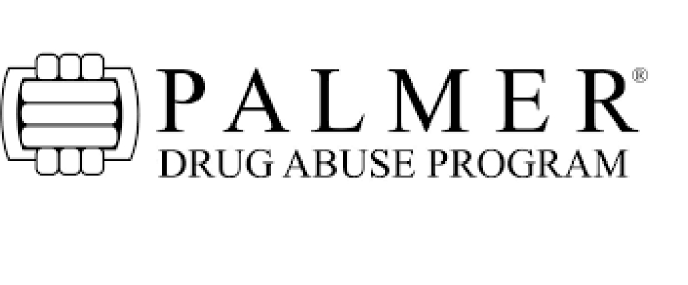
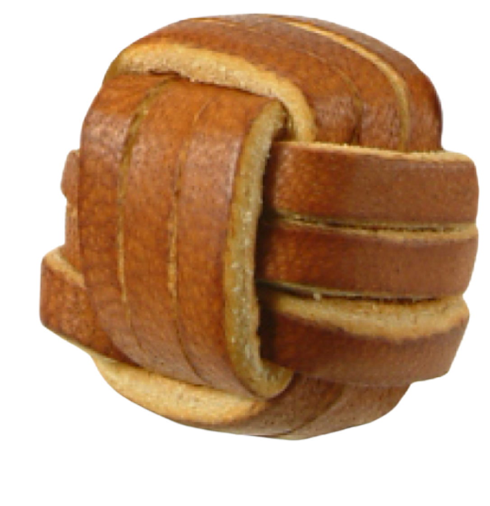

Programs & Services
Get Involved
About US
Contact US
Individual & Family Recovery
What We Offer...
- New Generations is offered to youth, ages 9-17, whose parent, guardian or sibling is struggling with or recovering from alcohol and/or drug use.
- Younger Group is offered to youth, ages 12-17, who are struggling with or recovering from alcohol and/or drug use.
- Adult Group is offered to adults, ages 18-35, struggling with or recovering from alcohol and or drug use.
- Family Group is offered to adults, 18 and over, whose family member or loved one is struggling with or recovering from alcohol and/or drug use.
Our History...
As the original program of Rise Recovery, PDAP (Palmer Drug Abuse Program), started it all. Starting off in Houston, Texas in 1971. PDAP was brought to San Antonio in 1977. The original group of teenagers discovered that if they loved, accepted and supported one another, they could stop using drugs and alcohol and stay that way. They also learned that through loving and helping each other, they began to feel good about themselves. They also discovered the strength and unity and power that comes from the “love of the group.” These principles of love and understanding remain the foundation of Rise Recovery programs over 40 years later!

From the beginning, there have been only three standing rules at meetings:
Do not attend meetings or any activities high or holding (in possession of alcohol or other drugs).
There will be no physical relationships at any function.
There will be no violence at any function.
With those three rather obvious tenets, the program continued to grow and flourish. After a few months of meetings, the group decided that a better-defined program would give them more tools for their fight to stay sober. They took the Twelve Steps of Alcoholic Anonymous and tailored them to fit their age group, special needs, and understanding. These same Twelve Steps are still used today.

After PDAP became a formal organization with regularly scheduled meetings, parents of some of the teenagers started bringing their children and waiting around until the meeting was over. A small group of “regulars” started visiting together around a coffee pot at the church. Over time, this group of parents discovered that families share the problem of substance use and also need help. They established the first Family Group.
There are two primary symbols PDAP used and we still use today to acknowledge sobriety and family involvement. Youth and young adults involved in our recovery groups receive a “Monkey Fist” for 30 days of continuous sobriety. Parents receive the “Parents Heart” for participation in Family Group for 30 days. The “Monkey Fist” is a mariner’s knot used by ships to help them dock. A baseball sized knot with lines attached is thrown from the ship to the dock-the first contact the ship has with land. The crew on shore catches the knot, secures the line to the dock and pulls the ship to shore. At Rise Recovery we have adopted this as a symbol representing our sobriety as we are being pulled in from the sea of drugs and alcohol. The fist symbolizes the first contact to solid ground, with the group symbolizing the crew that pulls the newcomer safely to shore. Traditionally, the small leather monkey fist is suspended on a leather thong around the participant’s neck